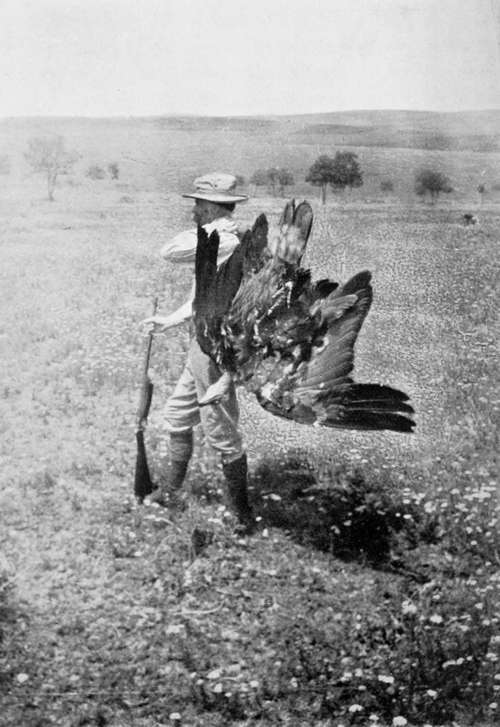

Collecting In The Dobrudscha. Part 8
Description
This section is from the book "Bird-Hunting Through Wild Europe", by R. B. Lodge. Also available from Amazon: Bird-Hunting Through Wild Europe.
Collecting In The Dobrudscha. Part 8
There were some delightful little streams running through the valleys, and at one of these we rested and ate our lunch lying on the soft turf, listening to the babble of the water and watching; the sun flicker-ing through the leaves of the beech-tree overhead- recubans sub tegmine fagi-until we all went fast asleep.
Then we had a hunt for a certain tree whereon the Black Vulture had nested in former years ; but after toiling up several hillsides, and forcing our way through the undergrowth until we were tired out, we found at last that the tree had fallen. We were rather late for finding nests in this forest, for the leaves were so thick and the trees so large that it was very difficult to see even such a huge nest as a Vulture's. We ought to have been here at least a month earlier, in April. It was now the 24th of May.
Some passing woodcutters on being questioned told us of another nest at some distance, but again we had great difficulty in finding it. At last after a long search we saw an enormous nest on the summit of a huge silver poplar, but so shut in with trees as to be almost hidden.
While I was cutting down two small intervening trees which grew higher up the hillside, so that I could get a clear photograph, I saw the bird's head move in the nest, and, thinking there was a young bird, called out to Rettig, who was lower down the slope.
To my surprise a huge Vulture then flew off, showing a tremendous expanse of wings, and though our fool of a driver had fired at it as she had left the nest, she returned again in a few minutes while I was struggling to get the camera to bear on the nest. Rettig, who had rushed up, was very excited, and fairly pushed the rifle into my hands, saying, 'Tirez-tirez.' I tried to explain that it would be very easy to photograph it first and to shoot it afterwards ; but my French did not come very fluently, and I was afraid that if I didn't shoot he would, so very reluctantly I took aim and pulled the trigger. A tremendous crash followed as the great bird collapsed and fell from the summit of the tree through the branches to the ground. They all patted me on the back and congratulated me on the shot; but I felt very savage at not having been able to get the photograph. For I remembered Prince Rudolf's account of how the Black Vultures he had met with had come back to the nest after having been repeatedly fired at, and I felt that a great mistake had been made, and that in all probability I should never have such another chance again.'
Carrying Back The Black Vulture (Vultur Monachus)
To save carrying such a weight all the way back we skinned her on the spot, for it proved to be a female. (The length from beak to tail was forty-two inches ; iris hazel, cere blue, beak dark-brown, feet bluish-white, claws black.) We found that it had been shot before, for there were eight large pellets of lead under the skin.
There was one egg, very handsomely freckled all over with reddish-brown spots, which proved to be addled. I have noticed before how frequently one finds addled eggs of the larger raptorial birds, and also how much the silver poplar is favoured by them for nesting purposes.
1 This foreboding proved to be too true.
This nest was of immense size, and had a whitish look about it, also as described by Prince Rudolf; but he must have drawn on his imagination in his account of the terrible stench exhaled by the bird he shot in Slavonia. There was no very offensive smell either when we skinned this bird or afterwards-for I slept several nights with the fresh skin lying not far from my bed. Nor was skinning the Griffon which I shot in Albania such a very objectionable undertaking. In fact, neither of these two Vultures smelt so much as a Pelican, and not nearly so much as a Pygmy Cormorant. This last, I believe, is called in Germany the Schtinker. At any rate Rettig always called it that, and it certainly justifies the name, for it is the foulest bird I ever skinned.
I have often wondered how it is that such huge birds as Griffon Vultures, which always live together in great numbers in places where they are found at all, can find enough carrion lying about to support themselves. Here it was a common sight every day to see the Griffons sailing along in great numbers searching for dead bodies, and as two or three Griffons can put away a dead sheep in a short time, the amount of meat necessary to keep alive such hordes of flesh-eating birds must be very considerable. But here the supply of dead animals was more than sufficient to keep them ; in one day we passed five dead horses, sheep, and cows, and another living skeleton in the shape of a horse feebly tottered about hardly able to stand upright.
Many of these no doubt had perished on account of the drought. There was hardly any grass, and the country was overstocked with cattle from the lower parts, all seeking food where there was not sufficient for the ordinary numbers. Again, during wet weather hundreds of cattle get bogged and perish miserably, and in the cold weather they die of exposure and starvation, so that all the year round the Vultures are provided for. If there is a little temporary scarcity in the supply they can go without much inconvenience many days without eating at all, and their power of flight enables them to travel hundreds of miles, if need be, into another country in their daily search for food.
The following day we went to a distant part of the forest after a nest of Imperial Eagle, or what had been occupied by a pair of Imperial Eagles last year. Now we found it had been taken possession of by a pair of Saker Falcons (Falco sacer), which had four young in down.
It was one of the finest things I have seen in the bird world to watch the old bird-the female-dashing round the tree as our man was climbing to the nest, and making frantic stoops at his head, uttering all the time fierce cries of rage. He told us that she never actually touched him, but it certainly appeared as if she was doing so from where we stood. Rettig and our driver, Andreas, shot at her several times, but luckily without effect, as she flew at such lightning speed that it was very difficult to see more than a momentary glimpse as she passed the surrounding tree-tops. I should have been very sorry if this brave bird had been killed.
Continue to:
- prev: Collecting In The Dobrudscha. Part 7
- Table of Contents
- next: Collecting In The Dobrudscha. Part 9